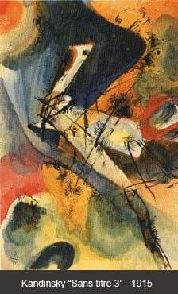
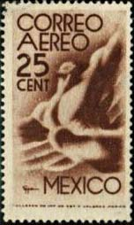
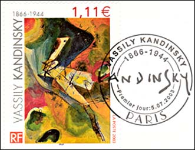
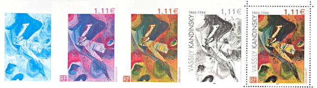
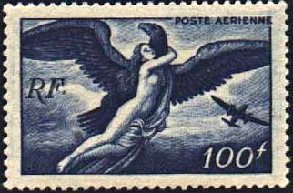

Kandinsky & Eppens Helguera
Will This Kind of Art Ever Die?
On the newsgroup news:fr.rec.philatelie a participant asked some time ago which is the title of the work of art shown on the French stamps "Kandinsky", that was issued in 2003. The reason of his question was that he couldn't find this information in the documents issued by the French postal administration. Finally another participant could find on the Web the picture shown below, where the year of issue and the the title were indicated.

This solved a part of the mystery but another question appeared, one concerning the subject of the painting ("sans titre" = without title). A possible answer to this difficult question was facilitated by Rod, when he started on the newsgroup news:rec.collecting.stamps.discuss a discussion concerning the worst design for a stamp. See below his example, shown near the already mentioned Kandinsky stamp.
 |
 |
This is Mexico Scott #C185 (25c chestnut brown - with watermark) issued 1947. The design repeats that of a 1944 (25c chestnut brown- no watermark) airmail stamp (Scott #C141). The design shows "symbol of flight". (Blair Stannard, on RCSD). There is a certain resemblance between both stamps, and for this reason I suppose that Kandinsky's painting shows a kind of hallucinating flight.

This hallucinating aspect was underlined by the sheet above (I show only the top 1/4th of it), that appeared in the same year 2003, in the interesting book "Impressions - Expressions", edited and sold by the French PA. The sheet is an illustration of a technique of printing: "Impression en héliogravure." Because the sheet appeared in this book only, it is somehow scarce, only 60,000 pieces being printed.
As for the painter, muralist, and sculptor Francisco Eppens Helguera (1913-1990), he was born in San Luis Potosí, Mexico. His work was influenced by the Nationalist ideas of the first painters from the artistic movement called the Mexican School of Painting, or Mexican Renaissance. He was awarded third prize in an international contest with a theme about peace, "Por la Paz y el Humanitarismo en Contra de la Amenaza de Guerra Nuclear" ("For Peace and Humanism, and Against the Menace of a Nuclear War" - a "peace" movement orchestrated in the free countries by the Soviet Union, in order to cover its imperialist politics - V.M.), organized by the Russian (USSR - V.M.) Ministry of Culture in 1986. After: http://home.att.net/~atguestartists/eppensbio.html
Published on the RCSD Newsgroup on May 13, 2006
AFAIK, Icarus or not, this stamp wasn't designed by a postal bureaucrat but rather shows a work of art. As such, it is an artistic representation of author's philosophy, so let's try to understand which is the message that this artist and his work try to spread.
What I see on the Mexican stamp Scott #C185 (and I'm not alone in this!) is a strong man's torso, with wings behind it, and with a bird's head.
As quite everybody of us knows, the attempts to fly (not to glide) by imitating the birds, i.e. by using the force of the muscles, failed. Nevertheless, man can fly today faster and surer then the birds, and this even without an atmosphere that surrounds him. To do this, he uses devices that were invented by his ingenious head, and here I mean a real human one, and not one borrowed from a bird!
Therefore the attempts to represent man's flight in a "birdie" manner are by no mean related to and for this reason are not appropriate for the AIR MAIL stamps.
Of course, the artists have the full right to imagine what they wish but this doesn't mean that works like that, shown on my page:
should be financed by the (often unsuspecting) taxpayers and/or by the users of the mail services.

See above an example of a well-constructed, classical design, France 1946 - 1947, Scott C20, Zeus Carrying Hebe. Its author is the renown artist and designer Pierre Gandon. We have here as well the mythological elements, related to the mankind's dream to fly, as the implementation of it, the plane, shown in the lower right corner. Neither the bird uses a propeller instead of head nor the plane a bird head in order to fly. The mankind is not only present but she is placed in the center of the work, in a way that she cannot be overlooked. All in all, a great stamp!